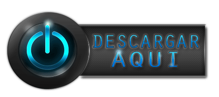

Temas de la unidad #1
- Definición de Ingeniería en Software
- Objetivos de las Ingeniería en software
- Origen de la Ingeniería en software
- La evolución del software
- La crisis del Software
- ¿Por qué se crea la Ingeniería en software?
- El software en la actualidad
- Factores De Calidad Del Software
- Métricas del software
- Problemas en el desarrollo de software
- Ingeniería del software
- Visión general del proceso de ingeniería del software
- Responsabilidad ética y profesional en ingeniería del software
- Código de ética (ACM/IEEE)
- Sistemas de información
- Tipos de sistema de información
- Elementos de un sistema de información
Más información
Temas de la unidad #2
- El proceso de software
- Características del proceso de software
- Otras Características del proceso de software
- Importancia del proceso de software
- Estándares relacionados con el proceso de Software
- Ciclo de vida del Software
- Ámbito general del ciclo de vida del Software
- Modelo del proceso de software
- Razones para modelar un proceso de software
- Modelo general de proceso en ingeniería
- El proceso de software
- Modelos de procesos de software
- RModelo cascada
- Desarrollo incremental
- Espiral
- Desarrollo Rápido de aplicaciones (DRA)
- Orientados a la reutilización
- Orientado a objetos (OO)
- Procesos ágiles
- Caracterización del software
- Motivación
- Proceso de desarrollo de software
- Metodología de software
- Uso de metodologías
- Problema
- Metodologías ágiles
- Procesos ágiles
Más información
Volver